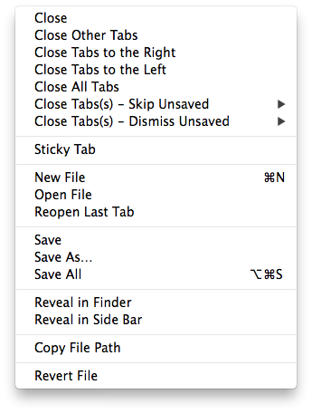

User Guide
Overview
Sublime Plugin with sticky tabs, more tab closing options, tab sorting, and tab access to cloning, deleting, renaming etc.

- Adds
Close Tabs to the Leftfor the current group. - Adds
Close All Tabsfor the current group. - Adds
Sticky Tabsthat allows a user to select certain tabs that will not close when a tab close command is issued. - Adds variants of the close commands to skip unsaved files, or to dismiss saved files with no prompt.
- Overrides the built-in tab commands and 'close' and 'close_all' commands to work with sticky tabs.
- Keep active window focus on delete, or default to the last active, left, or right tab (user configurable).
- Add open last tab, reveal in sidebar or finder, copy file path, save options, and revert.
- Adds tab sorting options (based loosely on @bizoo's SortTabs plugin).
- Access clone, delete, rename, move, save, reveal, copy file path, revert, etc.
General Usage
Using TabsExtra is very straight forward once the menu is created. TabsExtra will update the right click context menu of tabs with various useful features. It also overrides a couple of Sublime's commands to allow for various improvements in relation to tab closing, tab focus when closing files, and tab position when opening files.
Install/Upgrade Menu
When first installing TabsExtra, you need to Install the new menu; this does not happen automatically. Go to Preferences->Package Settings->TabsExtra and Install/Upgrade either the basic tab menu or the override menu. The basic menu's commands won't be grouped together with the built-in options because of the way Sublime Text's menus are managed. But the override menu overrides the Default Package's tab context menu for sane, clean grouping of the commands.
Which Commands does TabsExtra Override and Why?
TabsExtra overrides all close commands that it can. The only one it does not override is when the close button on a tab is clicked as that seems to side step the override API and cannot be intercepted.
TabsExtra intercepts the close commands in order to provide enhanced close options. Here are all the intercepted commands:
close_file: Close called with a specific window and view id.close_by_index: Close view from tab.close: Close active view from global menu.close_all: Close all tabs in all groups.close_others_by_index: Close other tabs in current group.close_to_right_by_indexClose tabs to right in current group.
This allows TabsExtra do special things like ignore certain tabs, focus a specific tab after closing tab(s), force close without prompting the user if they want to save for every unsaved tab, or even skip unsaved tabs when closing.
TabsExtra cannot override the tab close button. But it should be able to predict when it is pressed, and focus the appropriate window after the close.
New Close Options
TabsExtra expands how many close options there are in the tab context menu. It also makes them available in the quick panel as well.
- Close.
- Close other tabs.
- Close tabs to left.
- Close tabs to right.
- Close all tabs.
And TabsExtra also provides variants that will force close unsaved tabs without annoying the user with a prompt for every unsaved tab. It also provides variants to simply skip unsaved tabs.
Sticky Tabs
TabsExtra allows users to mark a tab sticky. This allows the tab to not close when a close operation is performed. By default, after any close command is run, the sticky tab properties are forgotten. You can make a tab's stickiness persist by enabling persistent_sticky.
Warning
TabsExtra overrides all close commands except when the user clicks the close button on a tab as this seems to be impossible to override. If this is problematic, you can disable the tab close button by disabling show_tab_close_buttons in your Preferences.sublime-settings file to prevent accidental clicking.
// By default TabsExtra forgets a tab's "stickiness" when // any "tab close" command is issued. You can make the tab's // "Stickiness" persist by enabling the following feature. "persistent_sticky": false,
A tab's stickiness can be controlled either the context menu or the quick panel.
Tab Focus After Close
By default TabsExtra keeps the current active tab focused, but if the active tab gets deleted, TabsExtra will default to either the left, right, or last active tab (depending how the user has it set).
// If active window gets closed, default to (left|right|last_active) "fallback_focus": "right"
Tab Spawn Position
TabsExtra can control where a new window is opened with the spawn_view settings option.
// Experimental: When opening a view, where should it be spawned at (none|left|active_left|active_right|right) "spawn_view": "none",
Tab Sort
TabsExtra adds various sort options to the tab context menu and quick panel.
- Sort by name.
- Sort by path.
- Sort by modified.
- Sort by created.
- Sort by file extension.
- Sort by size.
- Sort by last activated.
- Sort by syntax.
- Sort current order in reverse.
You can control how numbers are handled in strings by enabling numeric_sort. Numbers in strings are sorted alphabetically by default, but you can cause the strings to be sorted numerically if needed.
// When sorting, normal strings will be sorted numerically. // // Example (non-numerical sort): // test12 test2 test1 => test1 test12 test2 // // Example (numerical sort): // test12 test2 test1 => test1 test2 test12 "numeric_sort": false,
You can also sort tabs on every file open and save by enabling sort_on_load_save and specifying your desired sort plugin.
// Sort tabs when a file is opened or saved "sort_on_load_save": false,
// Sort module to use when sorting on load and save // "module": plugin that defines what view meta data is used to sort // "reverse": (optional) sort tabs in the reverse (true|false) "sort_on_load_save_command": {"module": "TabsExtra.sort.name"}
Customizing Sort Options
You can control which sort options appear by adding or removing entries from the sort_layout. You can also change their orders as sort_layout is a list that preserves order. Each entry contains three keys:
| Key | Required | Description |
|---|---|---|
module |
Yes | Path to sort module that is relative to Packages. It is done in a python import style where . is used instead of /; also the .py extension is omitted. |
caption |
Yes | Caption gives the name that should be displayed in menus or the quick panel for the sort method. |
reverse |
No | Causes the sort to be returned in reverse order. |
// Define sort layout. Each entry contains: // "module": plugin that defines what view meta data is used to sort // "caption": menu name for entry // "reverse": (optional) sort tabs in the reverse (true|false) "sort_layout": [ {"module": "TabsExtra.sort.name", "caption": "Name"}, {"module": "TabsExtra.sort.path", "caption": "Path"}, {"module": "TabsExtra.sort.modified", "caption": "Modified"}, {"module": "TabsExtra.sort.created", "caption": "Created"}, {"module": "TabsExtra.sort.type", "caption": "Extension"}, {"module": "TabsExtra.sort.size", "caption": "Size"}, {"module": "TabsExtra.sort.activated", "caption": "Last Activated"}, {"module": "TabsExtra.sort.syntax", "caption": "Syntax"}, {"module": "TabsExtra.sort.reverse", "caption": "Reverse Order"} ],
If these modules do not suit your needs, you can write your own.
Within a sort module, there must be a run method as shown below:
def run(views, view_data)-
This function takes a list of
viewsand an empty list to append sort data to. Theview_datais populated by therunfunction with arrays of formatted info that will be used to sort the tabs. Info with the most importance should be appended first.If you are dealing with strings that have numbers, and you wish to sort them numerically, you can import the numeric helper with the following import:
from TabsExtra import tab_sort_helper as tsh. Once imported you can simply run your data throughtab_sort_helper:tsh.numeric_sort(dirname(v.file_name() if v.file_name() else '').Parameters:
Parameter Description viewsList of Sublime view objects. view_dataAn empty list that should be populated by the function with relevant sort data. Example:
from os.path import dirname, basename from TabsExtra import tab_sort_helper as tsh def run(views, view_data): for v in views: view_data.append( ( tsh.numeric_sort(dirname(v.file_name() if v.file_name() else '').lower()), tsh.numeric_sort(basename(v.file_name() if v.file_name() else '').lower()), v ) )
Additional Menu Helper Commands
TabsExtra also adds a number of other miscellaneous useful commands in the tab context menu. Many of which are already available in the quick panel. You can control which ones show up in menu by configuring menu_layout in the settings file; you can even control the order.
// Menu layout include or exclude, in whatever order you desire, the following options: // ["close", "sticky", "open", "clone", "save", "delete", "rename", "reveal", "path", "revert", "sort"] // When done, go to Preferences->Package Settings->TabsExtra and Install/Upgrade either // the default TabsMenu or the Override Menu which overrides the "Default" package's menu. "menu_layout": ["close", "sticky", "open", "clone", "save", "delete", "rename", "reveal", "path", "revert", "sort"],